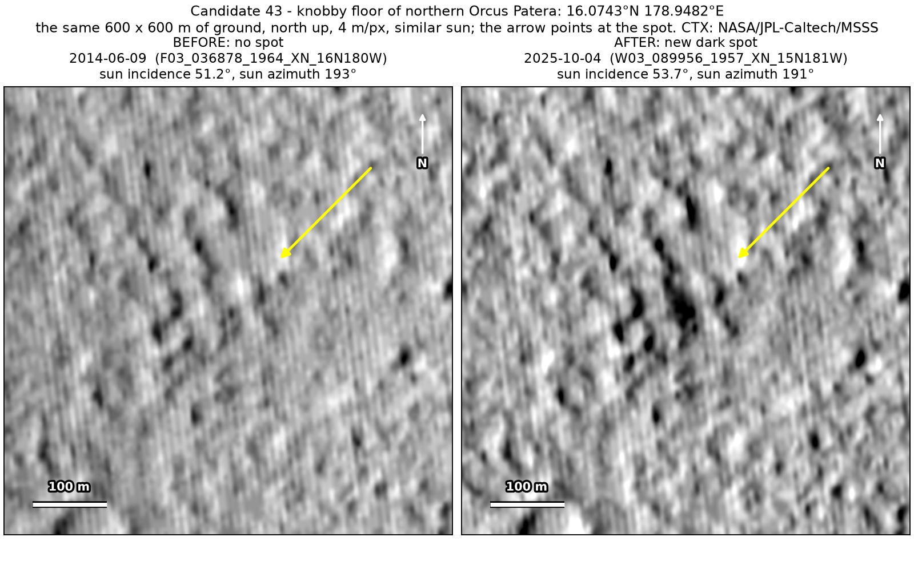
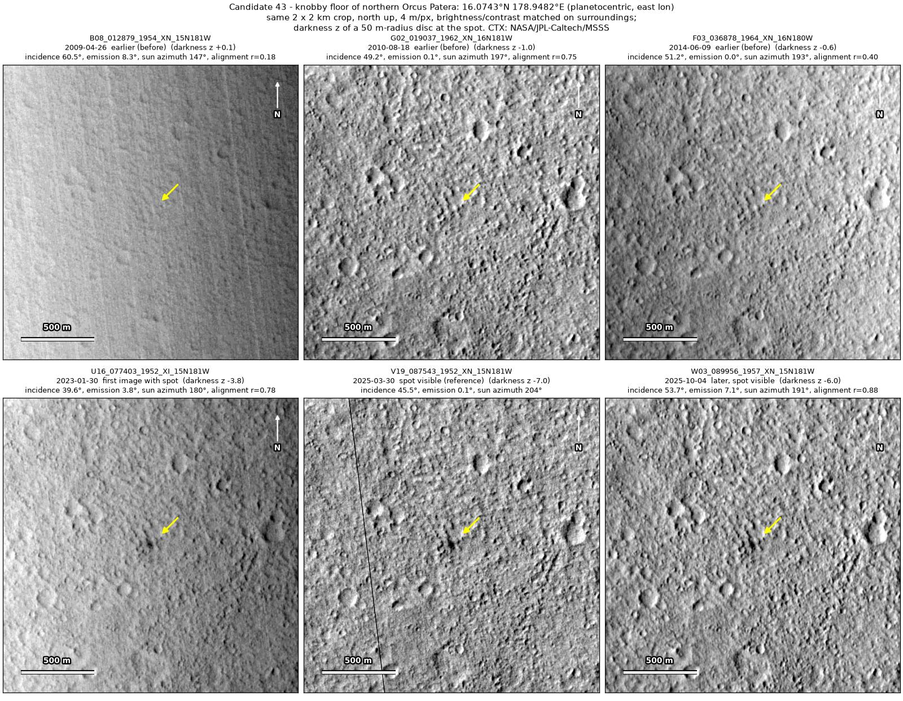
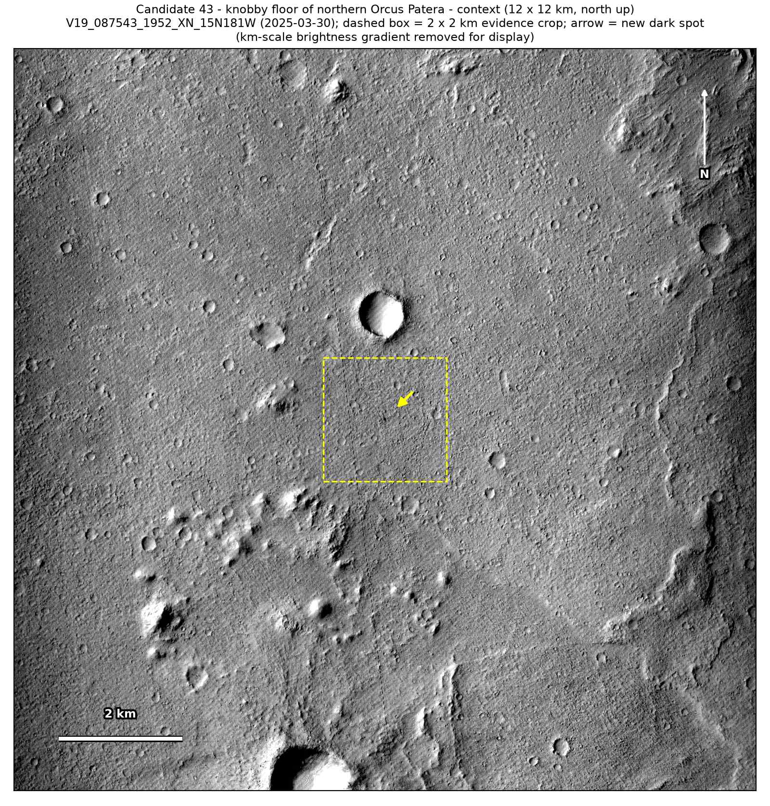
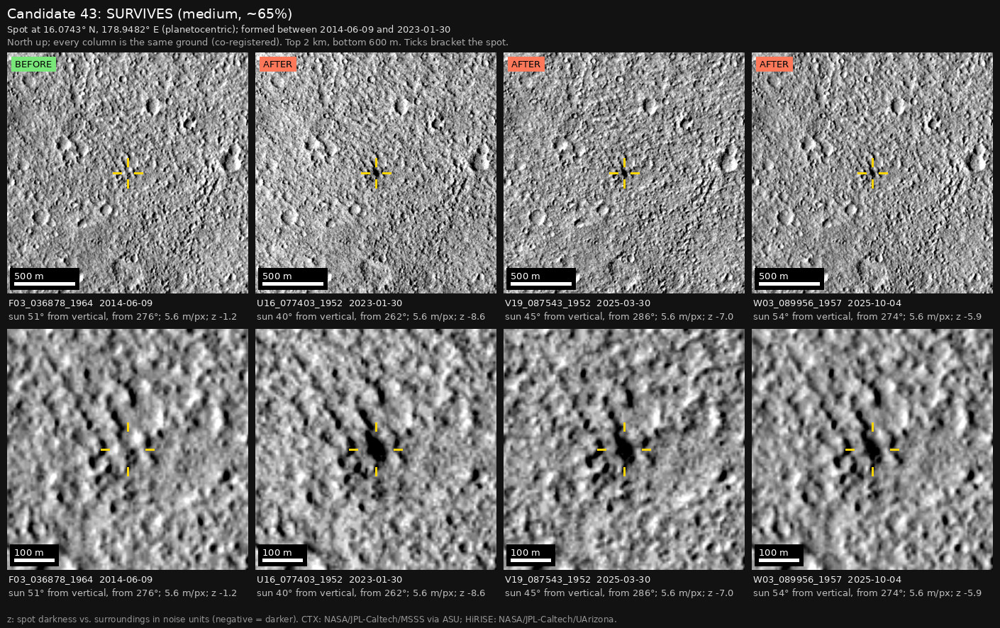

Professor of Mathematics
Paata Ivanisvili
Department of Mathematics, University of California, Irvine

← Possible new impact sites on Mars
Candidate 43: Knobby floor of northern Orcus Patera
Strong · roughly 65%

What changed. A compact dark spot 50 to 60 m across appeared on the knobby floor of Orcus Patera between June 2014 and January 2023. It is still there in March and October 2025, 2.7 years after it was first seen. Before, only a faint dark patch, about a quarter as dark, was there.
Why it may be a new impact. Three earlier images, from 2009 to June 2014, would each have shown the spot and show only the faint patch; the June 2014 image was taken under the same sun as the October 2025 one, so the spot is not a shadow. It is compact, with no tail, and it is in three images from three orbits. Faint patches like the earlier one cover about a seventh of the ground around it, and none of them darkened like this.
- Location
- 16.074° N, 178.948° E
- Absent
- 26 April 2009, 18 August 2010 and 9 June 2014; each shows only a faint dark patch there
- Present
- 30 January 2023, 30 March 2025 and 4 October 2025
- Size
- Compact dark spot 50 to 60 m across
- Confidence
- Strong candidate; roughly 65% that it is a new impact.
- Caveat
- A faint dark patch was already at the spot, so dark material gathering where some already lay, or a short slope streak (a small dust avalanche) on this knobby floor, remains possible; that is why the confidence is lower. It is also the only one of candidates 38 to 49 inside the area of a catalogue of new impacts near the InSight lander (Bickel et al. 2025), which could not be checked, and its window overlaps the period that catalogue covers. No HiRISE image covers the spot, which makes a listing there unlikely (the catalogue’s authors request a HiRISE image of every impact they confirm), though not impossible. Like every candidate here, it is unconfirmed: see the caveat.


